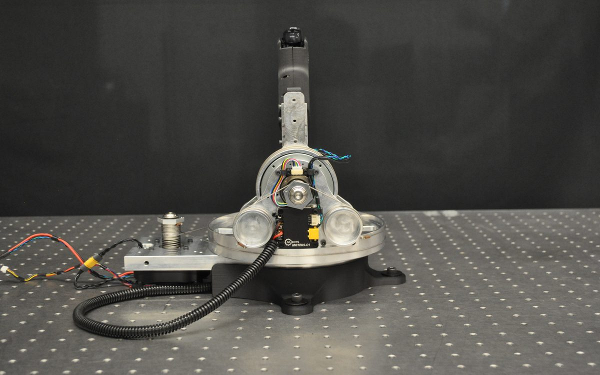
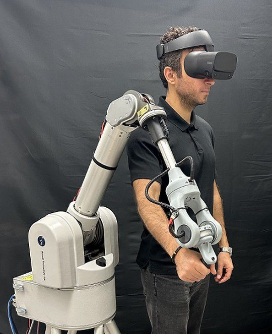
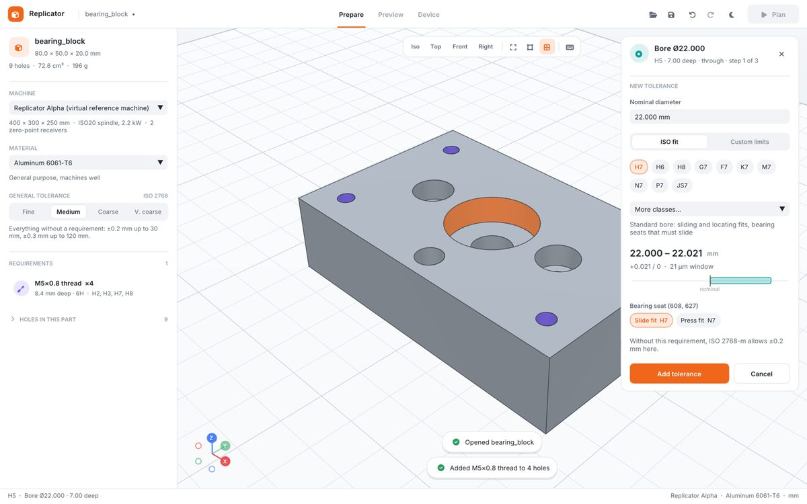
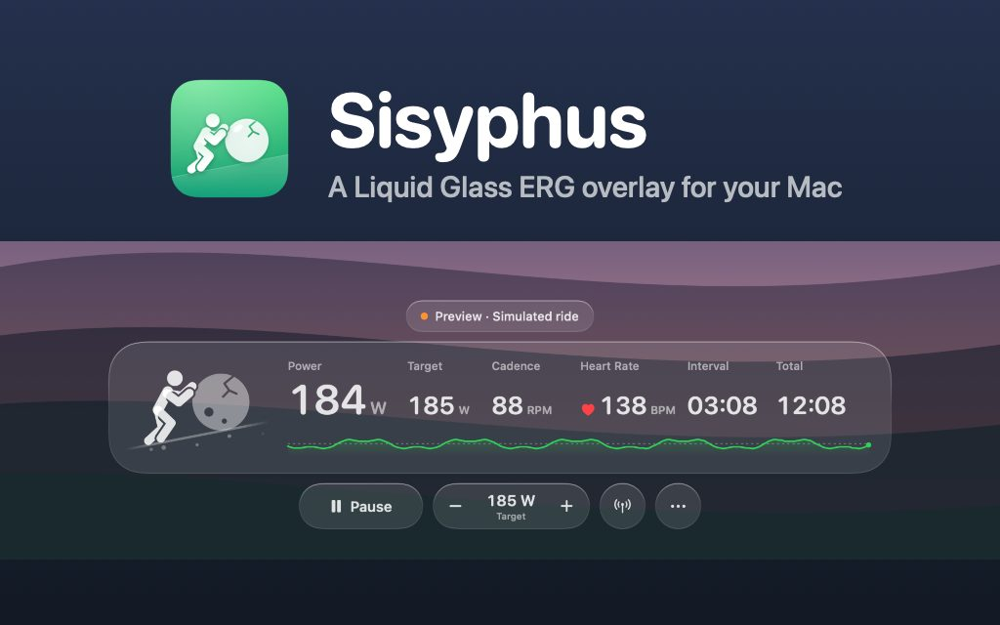
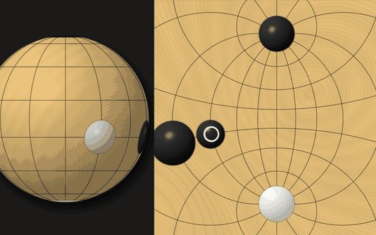

Projects
Each project covers more than one discipline. For each one I’ve listed what I did myself, and team projects say so.
- 01Haptic wrist
- 02Field mobile manipulator
- 03Hopping robot
- 04Quadruped
- 05Lightsaber demo
- 06Wrist test suite
- 07Teleoperation software
- 08Replicator
- 09Sisyphus
- 10Spherical Go
01 · MSc thesis and Barrett Technology
Haptic wrist for the Barrett WAM
A cable-driven haptic wrist that mounts on a Barrett WAM arm on the operator’s side. Together they give full 7-DOF control of a follower WAM, and the operator feels the forces the follower meets.
The wrist was the final stage of a research project that ran from 2014 to 2026. I developed it through my MSc at the University of Alberta, then spent four months in 2026 at Barrett Technology in the Boston area, the company behind the WAM, designing and building the final version alongside their engineers.

- Range
- 172° / 131° / 69°pronation–supination, flexion–extension, ulnar–radial deviation
- Bandwidth
- 33–40 Hzclosed loop, per joint
- Peak torque
- 8.4 N·mmost of a person’s wrist strength
- Control loop
- 500 HzCANopen, with a 2 ms safety supervisor
- Drives
- Barrett Puck® P4-37™ with TQ ILM50 frameless motors
- Transmission
- Two motors share flexion and deviation through a cable differential
- Role
- Designed and built the final version with Barrett’s engineers, from mechanism to firmware
- When
- MSc from Sep 2024; Barrett Technology for four months in 2026
- Status
- Final version: two units built at Barrett; demoed at IROS 2026
- Tools
- CAD, FEA, CNC, KiCad, CANopen, C++, Python, libbarrett
At Barrett Technology, Boston area (2026)
- Mechanical design and manufacturing of the final version: the full assembly and drawings, and work with manufacturers on tolerances and materials.
- Ran FEA under multiple load cases, and analysed cable stiffness, pulley geometry and reflected inertia.
- Automated motor characterization on a dynamometer: load sweeps, efficiency curves, and thermal and peak-torque tests.
- Worked on porting the WAM from Barrett’s own CAN protocol to standard CANopen, from the control library down to the safety-board firmware.
- Wrote Python interfaces for Barrett’s motor controllers, plus tools for gravity calibration, dynamics identification and friction compensation.
- Built haptic demos in virtual environments, including a lightsaber game whose resistance depends on where the blade is hit. Visitors to Barrett’s booth at IROS 2026 in Pittsburgh duelled with it through the week.
In my MSc
- Designed and built four cable-driven wrist prototypes, including a high-performance version with a precision cable-tensioning unit.
- Machined and assembled more than a dozen custom aluminum parts on CNC mills and lathes.
- Designed a custom PCB for the haptic handle around a PS5 trigger module.
- Wrote the real-time C++ stack on libbarrett, including a port of Barrett’s gravity calibration tools to the new wrist.
- Wrote a real-time C++ CANopen driver for the final wrist, and an automated test suite to measure it.
- Led three undergraduate contributors from mechanical engineering, computing science and computer engineering.
- Before this, as an undergraduate: designed and tested spherical-parallel and serial-gimbal wrist mechanisms with researchers at Johns Hopkins University, under a $500K CFI JELF grant.



02 · Research team
Haptic mobile manipulator for the IDEaS challenge
A teleoperated robot for disaster zones and other places too dangerous to send a person. A 7-DOF Barrett WAM rides on a Clearpath Husky. The operator drives it from a second WAM fitted with a cable-driven wrist, feels the forces the robot meets, and sees the scene in VR through a 360° camera. Our team demonstrated it to the Department of National Defence as one of eight finalists in the IDEaS challenge.


- Role
- Undergraduate research assistant: mobile base, sensing and ROS integration
- When
- 2022 – 2024
- Outcome
- Finalist team (1 of 8); funded by a $500K IDEaS grant
- Stack
- ROS, SLAM, FLIR Ladybug2 and Blackfly, Oculus Rift, two WAMs
How the system works
- The operator side is a 4-DOF WAM plus a 3-DOF cable-driven wrist exoskeleton, matched joint for joint to the 7-DOF WAM on the robot.
- The arms are coupled in joint space: each joint runs a PD position loop with the matching joint on the other arm as its setpoint, so forces on the robot push back on the operator.
- The cable drive gives a linear map from motor output to joint torque, so the operator feels correctly scaled forces.
- A Ladybug2 360° camera feeds an Oculus Rift headset, with FLIR Blackfly cameras covering the front and rear.
- The WAM is mounted low on the Husky for stability, and SLAM on a Hokuyo LiDAR handles mapping and autonomous navigation.
What I did
- Redesigned and manufactured the Husky chassis and body panels to carry the WAM with a low center of gravity.
- Integrated the sensors in ROS with URDF models of the full robot: LiDAR navigation, the Ladybug2 and Blackfly cameras, IMU and GPS.
- Modified legacy LiDAR hardware to run on ROS Noetic, and tracked down hardware and communication faults with oscilloscopes and serial diagnostics.
- Presented the system as first author at the Alberta Robotics & Intelligent Systems Expo, and helped demonstrate it to the Department of National Defence.
03 · Personal project
Variable-pitch hopping robot
A one-legged hopping robot whose leg is driven by a screw with a variable-pitch groove, so the gear ratio changes along the stroke: high force from a crouch, high speed at takeoff. Three reaction wheels on a cube corner steer it in flight.
- Role
- Solo: mechanism, electronics, controls and firmware
- When
- 2026 – present
- Status
- Controller proven in simulation; board designed; hardware build next
- Tools
- Python, MuJoCo, C++ on Teensy 4.1, KiCad, CAN
What I did
- Wrote an optimizer that turns a desired push into a groove profile and checks it against motor speed, contact stress and screw whirl. One candidate reaches a modelled 10.7 m/s takeoff in a 61 ms push.
- Replaced a tail and two reaction wheels with three identical wheels on a cube corner. Their axes are orthogonal, so torque allocation is a single matrix transpose.
- Built foot placement on the robot’s measured hop-to-hop return map: a 0.3 m/s shove is gone by the next hop.
- Added a soft-landing mode that cut landing deceleration from 8.6 g to 5.7 g, plus a safety supervisor that has kept the leg under 85% of its stroke in every simulated run.
- Designed a Teensy 4.1 carrier board with three CAN buses and a central IMU. It disarms the robot if a control loop misses its deadline.
- Ported the controller to C++. A replay test matches the Python version to within 1e-12 over a 16,000-tick episode.


04 · Research platform
HAL, a quadruped with an actuated spine
A 9-DOF quadruped research robot with a spine actuator, designed to stay mechanically sound through long experiments and dynamic gaits, as a platform for reinforcement-learning research.

- Role
- Mechanical design, manufacturing and actuator electronics
- Structure
- CNC-machined aluminum and carbon-fiber nylon prints
- Actuation
- BLDC motors with absolute magnetic encoders
- Tools
- CAD, CNC, 3D printing, MuJoCo MJX, Brax PPO
What I did
- Designed and built a novel 9-DOF quadruped with an actuated spine.
- Manufactured it from CNC-machined aluminum and carbon-fiber nylon 3D-printed parts.
- Integrated BLDC actuators, absolute magnetic encoders and custom motor-control hardware for reinforcement-learning experiments.
- Built MuJoCo Gymnasium environments for jumping, flipping, walking and running.
- Rebuilt the full model from the CAD for MuJoCo MJX, with motor models that limit torque by current and back-EMF.
- Set up a backflip task trained with Brax PPO on thousands of parallel simulated robots, with domain randomization. Training is in progress.
05 · Barrett Technology
Haptic lightsaber demo
A sword-fighting game for a WAM fitted with the haptic wrist. The arm renders the blade’s contacts, so a block pushes back, and resistance depends on where the blade is hit. Visitors to Barrett’s booth at IROS 2026 in Pittsburgh played it through the week.

- Role
- Game, haptic rendering and viewers
- When
- 2026, at Barrett Technology
- Status
- Shown at IROS 2026
- Tools
- C++, libbarrett, Python, WebXR
What I did
- Wrote the game and its haptic rendering in C++ on libbarrett, inside the arm’s 500 Hz control loop.
- Streamed game state over UDP to a desktop viewer and to a Meta Quest 3 browser viewer with stereo rendering and head tracking. The viewers only display; they never send commands to the robot.
- Added fruit slicing and sparring opponents with adjustable difficulty.
06 · MSc thesis
Haptic wrist test suite
Automated bench experiments that measure what the wrist can render: closed-loop bandwidth, friction, Z-width, virtual-wall hardness, impedance and thermal limits. Each experiment can dry-run against a simulated wrist before it touches hardware, and each has a paired analysis that writes the figures.

- Role
- Solo: experiments, driver and analysis
- When
- 2026
- Status
- Run on two wrists; feeding the thesis
- Tools
- Python, C++, CANopen, NumPy, SciPy
What I did
- Wrote a small real-time C++ CANopen library for the wrist: a 500 Hz SYNC loop with PD and feedforward rendering through the differential, zeroing, and its own safety supervision, since the bench has no safety board.
- Identified inertia, damping and friction from the drives’ measured current rather than from controller models, so the numbers describe the device and not the loop.
- Logged loop timing and measured command-to-torque delay in every run, so late cycles and lost positions show up in the analysis.
- Ran the suite on the final wrist and on an earlier moteus-driven prototype.
07 · Lab team
WAM teleoperation software
Our lab’s leader–follower system for two Barrett WAM arms, which the haptic wrist plugs into. This is team software; I worked on it with Dylan Miller, Sergey Khlynovskiy and Amir Noohian.

- Role
- Contributor: torque control, gripper, haptic handle, Docker
- When
- 2024 – 2026
- Status
- Used in our IROS 2026 submission
- Tools
- C++, ROS Noetic, libbarrett, Teensy, CAN-FD, Docker
What I did
- Torque control for the sensorless four-channel controller, and the vertical-mount dynamics used to estimate external torque.
- Integrated the gripper and a haptic trigger handle. I wrote the handle’s Teensy 4.0 firmware, which talks CAN-FD and stiffens a PS5 trigger as the gripper’s measured torque rises.
- Helped containerize the stack with Docker, and ported libbarrett to Ubuntu 24.04.
08 · Personal project
Replicator
Planning CAM for 3-axis machining. Open a STEP part, say which holes are threads and which bores need a fit, and it plans the whole job: setups, workholding, toolpaths, measure-and-correct checkpoints and LinuxCNC G-code. The goal is CAM that feels like a 3D-printer slicer.

- Role
- Solo
- When
- 2026
- Status
- Early but end to end; not yet run on a real machine
- Tools
- C++20, OpenCASCADE, Clipper2, wxWidgets, Catch2
What it does
- Plans setups, including flipped and side setups, and reaches angled holes on a 3+2 tilting table instead of re-clamping.
- Clears the part with 2.5D toolpaths, then drills, bores and thread-mills holes to the stated ISO fits.
- Adds measure-and-correct checkpoints for fits, and writes LinuxCNC G-code for each setup.
- Replays the plan in a preview that shows the setups, the tool moving along the timeline, and why each choice was made.
09 · Personal project
Sisyphus
A Mac app for indoor cycling. It holds a smart trainer at a target wattage (ERG mode) over standard Bluetooth, in a small glass overlay that floats over full-screen video. A tiny Sisyphus pushes his boulder one step per pedal stroke.

- Role
- Solo
- When
- 2026
- Status
- Open source, MIT license
- Tools
- Swift, CoreBluetooth, no third-party dependencies
- Controls the trainer through the Bluetooth Fitness Machine Service that most current smart trainers support.
- Reads heart rate from any Bluetooth sensor, keeps a ride history with power and heart-rate charts, and exports TCX or uploads to Strava.
10 · Personal project
Spherical Go
Go played on a sphere. The board is a latitude–longitude grid with a point at each pole, shown as a globe and as a stereographic map. It uses Tromp–Taylor rules, which carry over to a closed board with almost no changes.

- Role
- Solo
- When
- Started 2022, updated 2026
- Status
- Playable, three board sizes
- Tools
- C++17, OpenGL
- The computer opponent uses Monte Carlo tree search with RAVE, running random games on every core but one.
- Board sizes of 86, 182 and 366 points, roughly matching 9×9, 13×13 and 19×19.
Also
Smaller builds and industry work
- Motor dynamometer toolkit, Barrett Technology. Python tools that drive a torquemeter, brake supply and oscilloscope through automated test protocols and produce torque, speed, efficiency and thermal curves.
- BLDC motor test stand. Designed and programmed a stand with load cells and a Teensy 4.1 for characterizing actuators.
- Box-picking robot, Millennium Three Technologies. Designed and machined aluminum components that made the robot stiffer and lighter, using CAD/CAM, CNC milling and waterjet cutting.
- Teaching robotics. As a TA for Introduction to Robotics and Mechatronics, helped student teams build a penalty-kicking robot, a planar cable-driven robot and a ball-balancing platform.